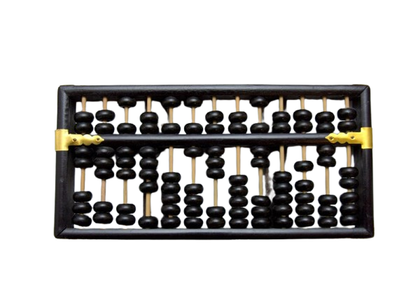
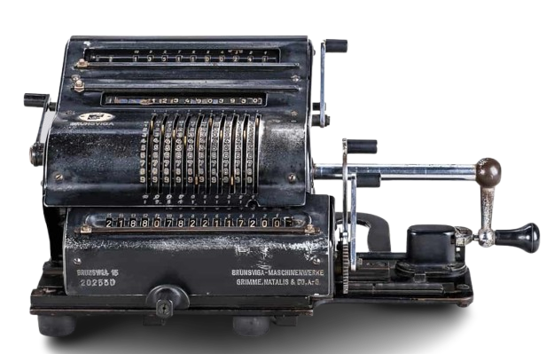
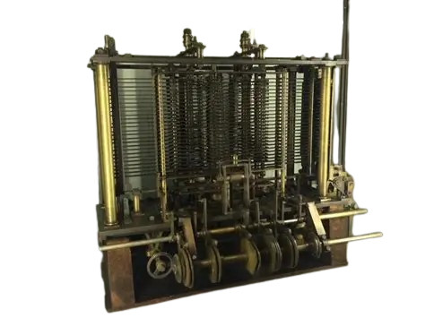
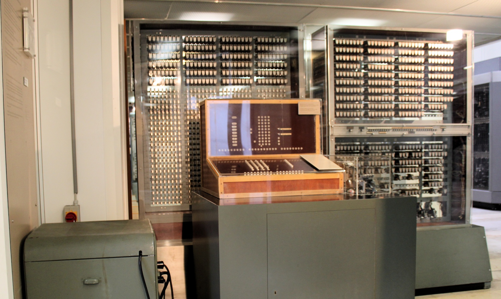
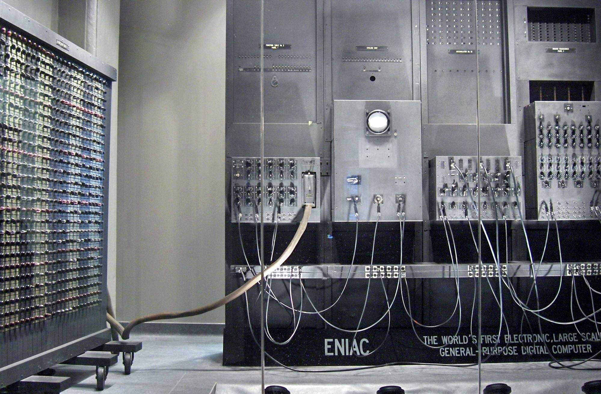
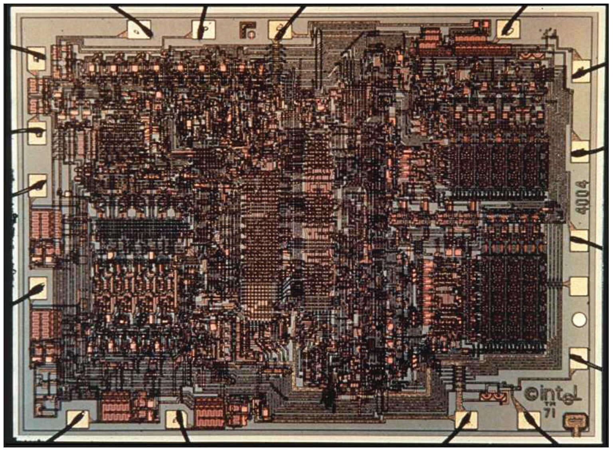

The History and Evolution of Computers
Computers have become an integral part of modern life, shaping industries, economies, and everyday experiences. However, the powerful machines we rely on today are the result of centuries of innovation and development. This article traces the fascinating history of computers, from ancient calculating tools to the sophisticated systems of the 21st century.
1. The Pre-Computer Era: Mechanical Beginnings
Long before electronic computers existed, humans developed tools to aid in calculation.
The Abacus (c. 2400 BCE)
The earliest known computing tool, the abacus, was used in ancient Mesopotamia and China. It allowed users to perform arithmetic operations using beads and rods.
Mechanical Calculators (17th Century)
- Blaise Pascal invented the Pascaline in 1642, a mechanical device capable of adding and subtracting.
- Gottfried Wilhelm Leibniz later improved on this with a calculator that could also multiply and divide.
These inventions laid the groundwork for automated computing.
2. The Analytical Age: Concepts of Programmability
Charles Babbage and the Analytical Engine
In the early 19th century, English mathematician Charles Babbage conceptualized the Analytical Engine, a mechanical general-purpose computer. Though never built in his lifetime, it had many features of modern computers, including an arithmetic logic unit and the use of punch cards for input.
Ada Lovelace: The First Programmer
Working with Babbage, Ada Lovelace created what is considered the first algorithm intended for implementation on a machine, earning her the title of the world’s first computer programmer.
3. The Electromechanical Era (1930s–1940s)
The Z3 (1941)
German engineer Konrad Zuse developed the Z3, the first fully functional programmable electromechanical computer. It used binary arithmetic and floating-point numbers.
Harvard Mark I (1944)
Built by IBM and Harvard University, this massive electromechanical computer performed complex calculations for the U.S. Navy during World War II.

4. The Electronic Revolution: First Generation (1940s–1950s)
ENIAC (1945)
The Electronic Numerical Integrator and Computer (ENIAC) was the first general-purpose electronic digital computer. It used vacuum tubes and could perform thousands of calculations per second.
Characteristics of First-Generation Computers
- Used vacuum tubes
- Large, power-hungry, and unreliable
- Programmed with machine language
5. Second Generation (1950s–1960s): The Transistor Age
With the invention of the transistor in 1947, computers became smaller, faster, and more reliable.
Key Features
- Used magnetic core memory
- Programs written in assembly languages
- Commercial computers like the IBM 1401 emerged
.webp)
6. Third Generation (1960s–1970s): Integrated Circuits
Integrated Circuits (ICs)
Introduced in the 1960s, ICs allowed thousands of transistors to be placed on a single chip, revolutionizing computing power and efficiency.
Development Highlights
- Emergence of operating systems
- Time-sharing and multiprocessing
- Mainframes like the IBM System/360 dominated business and government use
7. Fourth Generation (1970s–Present): Microprocessors and Personal Computers
The Microprocessor (1971)
Intel introduced the 4004, the first commercially available microprocessor, leading to the development of personal computers (PCs).
PC Revolution
- Apple I and II (1976–77): Steve Jobs and Steve Wozniak popularized home computing.
- IBM PC (1981): Set a standard for personal computing.
Software Breakthroughs
- Operating systems like MS-DOS, Windows, and macOS
- Widespread adoption of word processors, spreadsheets, and the internet
8. Fifth Generation and Beyond: AI and Quantum Computing
Artificial Intelligence
Modern computers can now learn and adapt through AI and machine learning, enabling applications like voice recognition, recommendation systems, and autonomous vehicles.
Quantum Computing
Still in its early stages, quantum computers promise exponential increases in processing power by leveraging quantum mechanics.
Cloud Computing & IoT
- Cloud services allow data storage and processing over the internet.
- Internet of Things (IoT) connects everyday devices, creating smart environments.
Conclusion
From simple counting tools to powerful AI-driven machines, the history of computers reflects humanity’s relentless pursuit of innovation. As technology continues to evolve, the future holds even more exciting possibilities—possibly beyond what we can currently imagine.